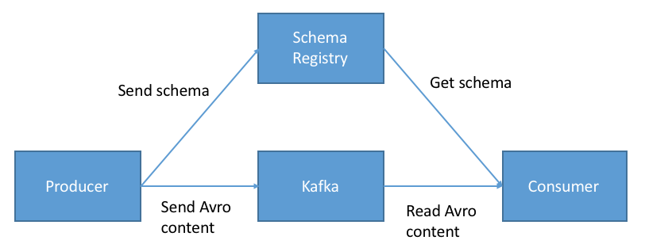

Python Schema Registry Client
Businesses collect large amounts of data, and data can be analized in real time. Usually, we use Kafka and a framework such us Flink or Faust to proccess data, but we do not include a way to validate it.
This is why Thrift, Protocol Buffers and Apache Avro were developed. In this post I want to talk about Avro Schemas and how to integrate them with Faust.
Apache Avro and Avro Schemas?
Avro is a row-oriented remote procedure call and data serialization framework developed within Apache's Hadoop project. It uses JSON for defining data types and protocols, and serializes data in a compact binary format. Its primary use is in Apache Hadoop, where it can provide both a serialization format for persistent data, and a wire format for communication between Hadoop nodes, and from client programs to the Hadoop services. Avro uses a schema (avro schema) to structure the data that is being encoded. It has two different types of schema languages; one for human editing (Avro IDL) and another which is more machine-readable based on (JSON).
It is similar to Thrift and Protocol Buffers, but does not require running a code-generation program when a schema changes (unless desired for statically-typed languages).
Avro Schema example:
{ "namespace": "example.avro", "type": "record", "name": "User", "fields": [ {"name": "name", "type": "string"}, {"name": "favorite_number", "type": ["int", "null"]}, {"name": "favorite_color", "type": ["string", "null"]} ] }
Now that we know avro schemas are, we should talk about where they are stored. We need a place where producers and cosumers can get them, and this is why a Schema Registry exist. The Confluent Schema Registryis a schema management that taht provides a RESTful interface for storing, serving and versioning schemas.
Scenario
We could think about a producer that uses a schema to serialize data and compact it into a binary representation and a consumer that deserialize the binary to get the original data cheking it with the corresponding schema.

The producer and consumer have to serialize/deserialize messages using the Schema Registry every time that they send/receive events to/from Kafka topics. We can imagine the producer and consumer as Faust application that are able to interact with the Schema Registry Server. In order to achive this, I have created Python Schema Registry Client
A Python Rest Client to interact against schema-registry confluent server to manage Avro Schemas resources. Also, has a
MessageSerializerin order to serialize/deserialize events using avro schemas.
Faust Integration
Asumming that you know Faust, we need to define a custom codec and a custom serializer to be able to talk with the Schema Registry, and to do that, we will use the MessageSerializer.
For the demonstration, let's imagine that we have the following schema:
{ "type": "record", "namespace": "com.example", "name": "AvroUsers", "fields": [ {"name": "first_name", "type": "string"}, {"name": "last_name", "type": "string"} ] }
Let's register the custom codec:
# codecs.codec.py from schema_registry.client import SchemaRegistryClient, schema from schema_registry.serializers import FaustSerializer # create an instance of the `SchemaRegistryClient` client = SchemaRegistryClient(url=settings.SCHEMA_REGISTRY_URL) # schema that we want to use. For this example we # are using a dict, but this schema could be located in a file called avro_user_schema.avsc avro_user_schema = schema.AvroSchema({ "type": "record", "namespace": "com.example", "name": "AvroUsers", "fields": [ {"name": "first_name", "type": "string"}, {"name": "last_name", "type": "string"} ] }) avro_user_serializer = FaustSerializer(client, "users", avro_user_schema) # function used to register the codec def avro_user_codec(): return avro_user_serializer
and in setup.py the following code in order to tell faust where to find the custom codecs.
# setup.py setup( ... entry_points={ 'console_scripts': [ 'example = example.app:main', ], 'faust.codecs': [ 'avro_users = example.codecs.avro:avro_user_codec', ], }, )
Now the final step is to integrate the faust model with the AvroSerializer:
# users.models class UserModel(faust.Record, serializer='avro_users'): first_name: str last_name: str
# users.agents.py import logging from your_project.app import app from .codecs.codec import avro_user_serializer from .models import UserModel users_topic = app.topic('avro_users', partitions=1, value_type=UserModel) logger = logging.getLogger(__name__) @app.agent(users_topic) async def users(users): async for user in users: logger.info("Event received in topic avro_users") logger.info(f"First Name: {user.first_name}, last name {user.last_name}") @app.timer(5.0, on_leader=True) async def publish_users(): logger.info('PUBLISHING ON LEADER FOR USERS APP!') user = {"first_name": "foo", "last_name": "bar"} await users.send(value=user, value_serializer=avro_user_serializer)
Now our application is able to send and receive message using arvo schemas!!!! :-) You can take a look the code example here
Comments
Comments powered by Disqus